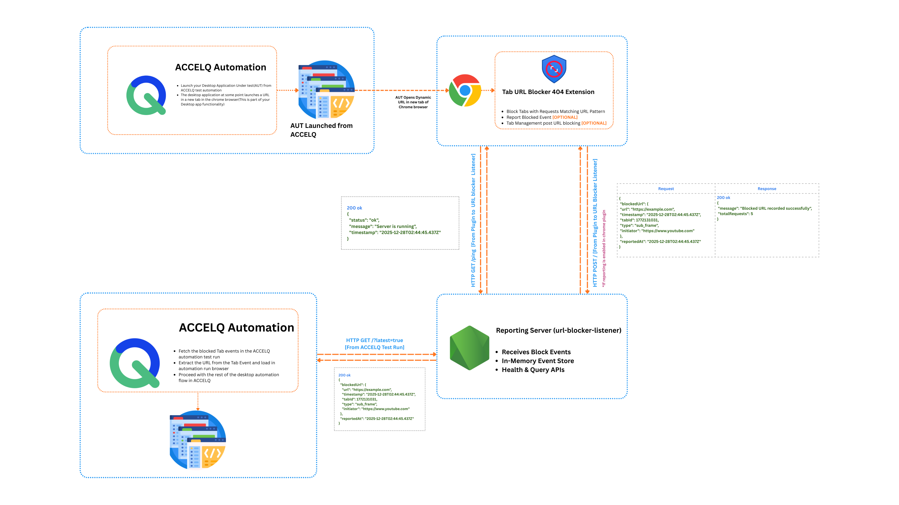

Architecture and Security Documentation
Source Code Repository: https://github.com/ajoealex/url-blocker
Chrome Extension Download: https://chromewebstore.google.com/detail/tab-url-blocker-404/kokjfejdghjdinfjhhpbihljmcfpjaci
URL Blocker Listener (Binary Download): https://github.com/ajoealex/url-blocker/releases
Tab URL Blocker 404 is a Chrome Manifest V3 extension that enforces website blocking using Chrome’s declarativeNetRequest engine. It supports optional audit and reporting through a local or centrally hosted listener service.
The solution consists of two components:
For ACCELQ automation use cases, it is recommended to start the listener service on the same machine where the ACCELQ agent is installed and running.

Download: https://chromewebstore.google.com/detail/tab-url-blocker-404/kokjfejdghjdinfjhhpbihljmcfpjaci
Reporting (Optional)
Sends blocked URL events to a user-configured URL Blocker Listener endpoint over HTTP POST. Reporting is enabled only when the listener service is running, configured, and reachable.
Auto-close Tabs (Optional)
Automatically closes tabs after a configurable delay when a blocked URL is accessed.
Result: All blocking is performed inside the browser. No network traffic is generated.
Security boundary: Reporting introduces a network path. If reporting is disabled, no block data leaves the browser.
| Permission | Purpose |
|---|---|
| storage | Store patterns and configuration |
| declarativeNetRequest | Apply blocking rules |
| declarativeNetRequestFeedback | Detect blocked requests |
| tabs | Enable tab auto-close functionality |
| <all_urls> | Apply rules across all sites |
Security rationale: These permissions are broad by necessity for network-level blocking. Risk is mitigated architecturally by using MV3 declarative rules, not runtime interception, content injection, or script-based scraping.
The listener is distributed as a prebuilt standalone executable for Windows, Linux, and macOS. It does not require Node.js installation on endpoints.
Download: https://github.com/ajoealex/url-blocker/releases
Admins to whitelist the extension
Extension ID: kokjfejdghjdinfjhhpbihljmcfpjaci
Plugin URL: https://chromewebstore.google.com/detail/tab-url-blocker-404/kokjfejdghjdinfjhhpbihljmcfpjaci
These APIs are called only when reporting is enabled.
GET /ping
Purpose: Connectivity and health validation before enabling reporting
Invoked by: Chrome extension to listener service
Usage: Server availability check
Response:
{
"status": "ok",
"message": "Server is running"
}
POST /
Purpose: Report blocked URL event to the listener service
Invoked by: Chrome extension
Request Body:
{
"blockedUrl": {
"url": "https://example.com",
"timestamp": "2026-01-01T10:00:00.000Z",
"tabId": 123,
"type": "main_frame",
"initiator": "https://google.com"
},
"reportedAt": "2026-01-01T10:00:00.000Z"
}
Response:
{
"message": "Blocked URL recorded successfully",
"totalRequests": 5
}
These APIs are not used by the plugin and are intended for administrators, monitoring tools, or integrations.
GET /
Purpose: Retrieve all stored tab block events
Response:
{
"requests": [
{
"url": "https://example.com",
"timestamp": "2025-12-28T02:44:45.437Z",
"tabId": 1772131031,
"type": "sub_frame",
"initiator": "https://www.youtube.com",
"reportedAt": "2025-12-28T02:44:45.437Z"
}
],
"totalRequests": 1
}
GET /?latest=true
Purpose: Retrieve the most recent tab block event
Response:
{
"latest": {
"url": "https://example.com",
"timestamp": "2025-12-28T02:44:45.437Z",
"tabId": 1772131031,
"type": "sub_frame",
"initiator": "https://www.youtube.com",
"reportedAt": "2025-12-28T02:44:45.437Z"
},
"totalRequests": 1
}
DELETE /cleanup
Purpose: Clear in-memory event store
Response:
{
"message": "All blocked URL requests cleared",
"clearedCount": 10
}
GET /ping
Purpose: Health check endpoint
Consumers: Tab URL Blocker 404 plugin
Response:
{
"status": "ok",
"message": "Server is running"
}